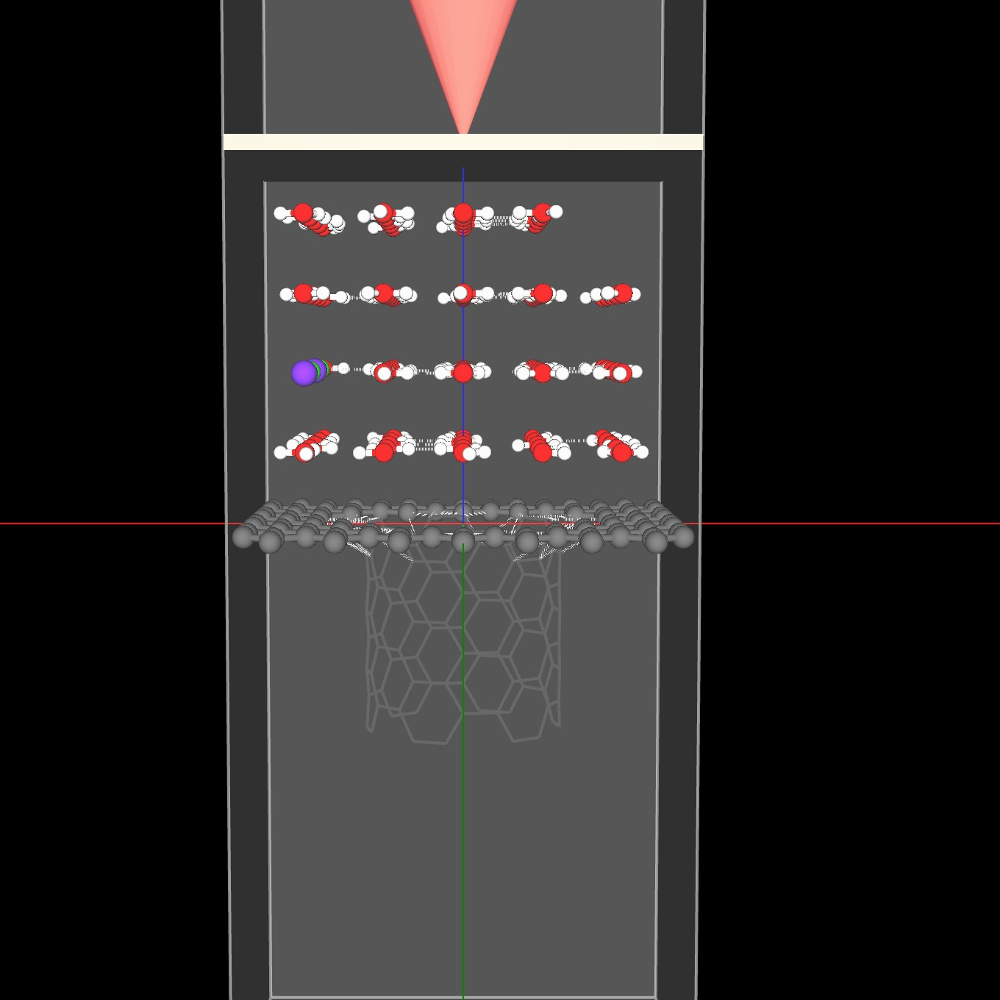
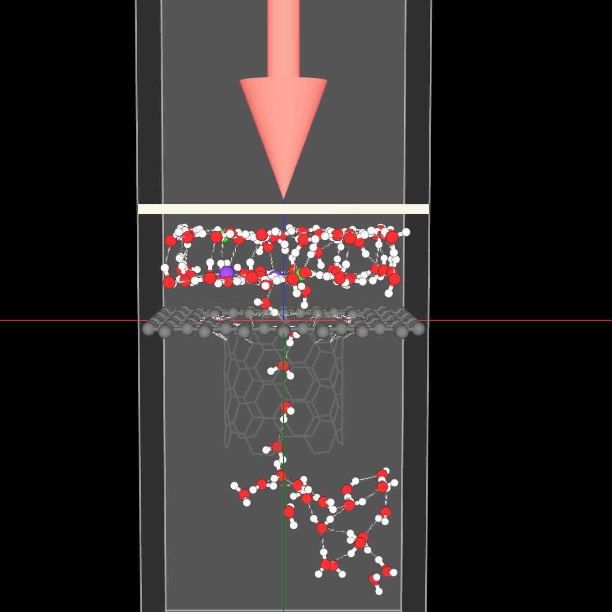
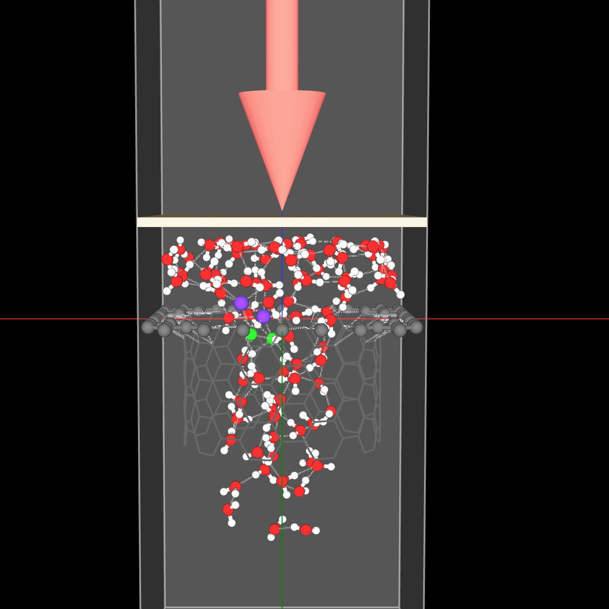

Nanotube Water Filters: Passing Water and Stopping Salt
Students press salt water against a carbon nanotube in AIMS and count the water molecules that pass in single file and the ions that stay behind, with an AI agent setting up each simulation they ask for.
Most of the water on Earth is salt water. A filter that makes fresh water from it needs pores that let water molecules through and stop the dissolved ions of the salt. A carbon nanotube is a candidate for such a pore: a tube of carbon atoms with a smooth wall, as narrow as a single water molecule. AIMS models every atom of one such pore, and an AI agent sets up the experiments. A student asks a plain-language question, and the agent builds the filter, runs it, counts the molecules, and posts the measured data in the chat. This article follows three questions: whether a narrow nanotube passes water and stops salt, what the pressure does, and how wide the tube can be. In the window below, salt water sits above a sheet of carbon atoms with a nanotube through it, and a plate presses on the water. Press Play and watch the tube.
Water (red and white), two sodium ions (purple), and two chloride ions (green) above a sheet of graphene with a nanotube through it. The plate at the top presses down. Water enters the tube within a few picoseconds of Play, and the ions stay above the sheet.
Fresh Water from Salt Water
Reverse osmosis is the most common way to remove salt from seawater. A pump presses the salt water against a membrane, water molecules pass through the membrane, and the sodium and chloride ions stay on the side of the pump. The membranes in use today are thin films of polymer, and a plant presses seawater against them at about 6 MPa, about 60 atmospheres.
In 2001 Hummer, Rasaiah, and Noworyta simulated a narrow carbon nanotube in water. Water molecules entered the tube and moved through it in single file, each one joined to the next by a hydrogen bond. In 2006 Holt, Bakajin, and coworkers made membranes of aligned nanotubes less than 2 nm wide and measured a flow of water far above the flow that the theory of ordinary liquids predicts for pores of that size. In 2007 Corry simulated nanotube membranes for desalination and found that the narrowest tubes pass water and reject salt. Living cells solved the same problem long ago. An aquaporin is a protein with a pore that passes water through the membrane of a cell in single file and stops ions.
Nanotube membranes are a subject of research and are not yet a common product. The question that the lab can answer is the one at the center of that research: what a single pore does to water and to salt.
The Model
The filter has two fixed parts. A sheet of graphene of 90 carbon atoms spans the box, 18 Å on a side, with a round hole at its middle. A (6,6) nanotube of 96 carbon atoms, 8.1 Å across and 8.6 Å long, sits in the hole with its top at the sheet. The two numbers in the name of a nanotube describe how the sheet of carbon atoms is rolled, and a larger pair of numbers means a wider tube. The inside of the (6,6) tube is about 4.7 Å wide between the surfaces of its carbon atoms, a little more than the width of one water molecule. The tube is the only way down.
Above the sheet are 90 water molecules, two sodium ions (Na+), and two chloride ions (Cl−). The water follows the TIP3P model of Jorgensen and coworkers: a charge of −0.834 e on the oxygen atom and +0.417 e on each hydrogen atom. The carbon atoms carry no charge and act on the water and the ions through the Lennard-Jones force. The piston of the lab, a plate above the water, presses down with 2000 MPa, about 20,000 atmospheres. The space below the sheet is empty, and the lab holds 300 K. The model has 460 atoms.
Running Experiments by Asking
AIMS is an AI-native environment. Building the filter, running it, counting the molecules on each side, and tabulating the results are the agent's work. A student asks the agent whether "a wider tube still stops the salt", and the agent recognizes the intent, builds the wider tubes, runs each one, and posts the results in the conversation.
Go to AIMS and open the list of examples, with the lightbulb button on the toolbar or the Examples item in the main menu (☰). Open A Nanotube Water Filter from the list (Nanotechnology, Molecular Machines). Examples belong to their author, so sign in and save your own copy with Save Project As in the Project menu. Then open the chat and type the prompts below. Two answers in the example keep a frame of the lab. Press "Load this state" on the card of the first answer and the lab shows the narrow tube after 200 ps. Press it on the card of the third answer and the lab shows a wide tube with salt passing through it.
- Filter — “Run it for 200 ps and count the water molecules that pass through the tube. Does any salt pass?”
- Pressure — “Does the water need the pressure? Try no piston, 1000 MPa and 4000 MPa.”
- Width — “Does a wider tube still stop the salt? Try (8,8) and (10,10) nanotubes at 2000 MPa.”
Water Passes in Single File, and the Salt Stays
Water molecules entered the tube within 5 ps and lined up in single file, about four at a time. The first molecule left the lower end of the tube after 14 ps. After 200 ps, 21 of the 90 water molecules were below the sheet, about one every 10 ps. The agent checked for leaks: no water molecule went from above the sheet to below it by any way other than the tube.
None of the four ions passed. The lowest point that any ion reached was 2.2 Å above the sheet. An ion in water is surrounded by water molecules that turn their opposite charges toward it, and this shell of water lowers the energy of the ion. The (6,6) tube has room for one water molecule across. An ion that entered it would have to leave most of its shell behind, and the pressure does not supply the energy for that.
The plate moved down from 15 Å to 8 Å above the sheet as it compressed the water and followed the molecules that left. The water that came through gathered under the sheet, around the lower end of the tube and up its outer wall. This run is one pore for 0.2 ns. A membrane has billions of pores in each square centimeter and runs for hours, so a flow of one molecule every 10 ps through each pore adds up to liters of water.


The filter at the start (left), and after 200 ps, loaded by the "Load this state" card (right). Water molecules stand in single file in the tube, 21 of them are below the sheet, and the four ions are still above it.
What the Pressure Does
The second prompt runs the same filter with no piston and with three pressures. The run with no piston lasts 60 ps, and the other rows give the first 120 ps.
| Pressure on the piston | Water molecules in the tube | Most below the sheet at one time | Below the sheet at the end | Ions below the sheet |
|---|---|---|---|---|
| No piston60 ps | 3 | 0 | 0 | 0 |
| 1000 MPa | 4 | 7 | 6 | 0 |
| 2000 MPa | 4 | 16 | 16 | 0 |
| 4000 MPa | 4 | 22 | 22 | 0 |
The (6,6) filter at four settings of the piston. The count below the sheet rises and falls by one or two, because a molecule at the lower end of the tube can move back into it.
Without the piston the tube still filled with three water molecules in single file, and none came out at the lower end. Water enters the tube without a push, as Hummer and coworkers found. A molecule in the file keeps a hydrogen bond to the molecule in front of it and to the molecule behind it. A molecule that leaves the lower end into empty space gives up those bonds, and the pressure supplies the energy for that. With the piston on, up to 7 molecules were below the sheet at 1000 MPa and up to 16 at 2000 MPa.
More pressure does not always give more water. At 4000 MPa, 21 molecules passed in the first 60 ps, and the flow stopped. The plate had come down to 7 Å above the sheet, and the water left there was pressed into a thin, dense layer. No ion passed at any pressure. These pressures are hundreds of times the pressure of a plant. The lab uses them so that a few molecules pass in a run of a few hundred picoseconds.
A Wider Tube Lets the Salt Through
The third prompt replaces the tube with two wider ones and runs each for 120 ps at 2000 MPa, with the same water and ions.
| Tube | Width between carbon centers | Most water molecules in the tube at one time | Water below the sheet after 60 ps | After 120 ps | Ions that went through |
|---|---|---|---|---|---|
| (6,6) | 8.1 Å | 4 | 6 | 16 | none |
| (8,8) | 10.8 Å | 14 | 25 | 59 | all 4, the first after 19 ps |
| (10,10) | 13.6 Å | 25 | 90 | 90 | all 4, the first after 6 ps |
Three tubes in the same sheet at 2000 MPa, one run of 120 ps each, with 90 water molecules and four ions above the sheet at the start.
A wider tube passes more water and filters less. The (8,8) tube held up to 14 water molecules at a time, no longer in single file, and passed 59 in 120 ps against 16 for the (6,6) tube. It also let all four ions through, the first after 19 ps. The (10,10) tube is wide enough for an ion to keep its shell of water. All 90 water molecules and all four ions went through it in 60 ps.

The (6,6) tube after 200 ps, with water in single file and the ions above the sheet (left), and the (10,10) tube 6 ps into its run, with a stream of water in the tube and two of the four ions already under the sheet (right). Both pictures come from "Load this state" cards.
A membrane for desalination has to balance the two results. Narrow pores give clean water slowly, and wide pores give salt water quickly. The pore of an aquaporin also passes water in single file. AIMS has a companion example in biology, Flying Through an Aquaporin Water Channel. The article on nanotube machines uses the same tubes as a bearing, a piston, and a motor.
What the Lab Cannot Show
The lab has one pore, 90 water molecules, and four ions, so every count is small, and another run gives different numbers. A real membrane has water on both sides. The lower side of this lab is a vacuum, and the water that comes through forms a small drop under the sheet. Two pairs of ions among 90 water molecules make a solution about twice as salty as seawater. The tube and the sheet are rigid, and their carbon atoms carry no charge, so the lab leaves out the chemical groups that the open ends of real nanotubes carry. The order of the three tubes is the reliable result: the narrowest tube stops the salt, and the wider tubes pass it.
What the Simulations Produced
The simulations were given the charges and the sizes of the atoms. Everything below came out of them:
- Single file — water enters a (6,6) nanotube within 5 ps and stands in it about four molecules at a time, with or without pressure.
- A filter — at 2000 MPa, 21 of 90 water molecules pass the (6,6) tube in 200 ps, and none of the four ions comes closer than 2.2 Å to the sheet.
- Pressure — no water leaves the tube without the piston, up to 7 molecules pass in 120 ps at 1000 MPa and up to 16 at 2000 MPa, and at 4000 MPa the flow stops after 60 ps.
- Width — at 2000 MPa the (8,8) tube passes 59 water molecules and all four ions in 120 ps, and the (10,10) tube passes all the water and all the ions in 60 ps.
Conclusion
This article uses a nanotube water filter to illustrate a new way to learn science: students converse with an AI agent that turns a plain-language question into a molecular dynamics experiment and hands back measured data. The desalination of seawater, a technology that supplies drinking water to many dry regions, becomes something students watch and measure for themselves in a browser: how water enters a narrow tube in single file, how the ions of the salt stay behind, how pressure drives the flow, and how a wider tube gives up the filter. By pairing a physically grounded simulation with an AI that can set it up and run it, AIMS turns a student's curiosity into a genuine scientific investigation of how a membrane makes fresh water from salt water.
← Back to AIMS